Companions: GK far-dive correction · Courtois integration. Documents: rig / bind / morphology / retarget contract · future action-description contract + what remains · runtime / performance / storage report. Live pages: match.html?ofScene=lineup&motion=RUN&facing=90, ?ofScene=bench&n=22&motion=RUN, playable keeper ?gkPlay=1&gkBackend=3d&gkChar=courtois&fps=60.
| body | bind checks | stature [m] | leg [m] | arm [m] | hip height [m] | shoulder width [m] | femur / tibia | torso [m] | inverse-bind max error | mesh verts / tris |
|---|---|---|---|---|---|---|---|---|---|---|
| SHORT_COMPACT | OK | 1.66 | 0.728 | 0.525 | 0.805 | 0.457 | 1.098 | 0.474 | 0.0e+00 | 1395 / 2408 |
| SHORT_LEAN | OK | 1.7 | 0.803 | 0.554 | 0.88 | 0.427 | 1.089 | 0.427 | 0.0e+00 | 1395 / 2408 |
| AVG_LEAN | OK | 1.8 | 0.832 | 0.579 | 0.914 | 0.47 | 1.091 | 0.47 | 0.0e+00 | 1395 / 2408 |
| AVG_ATHLETIC | OK | 1.83 | 0.865 | 0.577 | 0.947 | 0.523 | 1.087 | 0.469 | 0.0e+00 | 1395 / 2408 |
| TALL_LEAN | OK | 1.96 | 0.961 | 0.647 | 1.047 | 0.495 | 1.061 | 0.476 | 0.0e+00 | 1395 / 2408 |
| TALL_POWER | OK | 2 | 0.942 | 0.621 | 1.029 | 0.583 | 1.064 | 0.524 | 0.0e+00 | 1395 / 2408 |
Checks: 23 bones in the shared order; finite joints; skinMatrix = world × inverseBind is the identity at bind; ankles at the ankle height; toe near the ground; exact stature; left/right symmetry; leg and shoulder ranges. The stature is exact because the vertical chain is normalised to H while the segment RATIOS (femur/tibia, torso, arms, shoulders, hips) are the body's own.
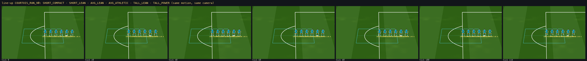
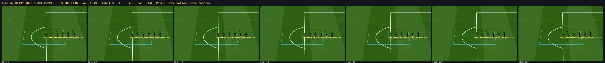
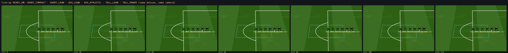
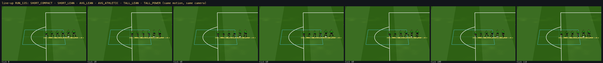
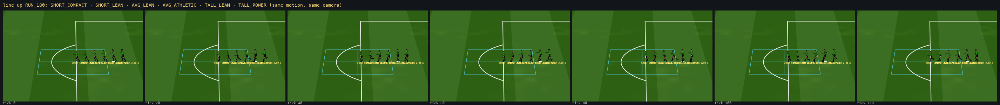
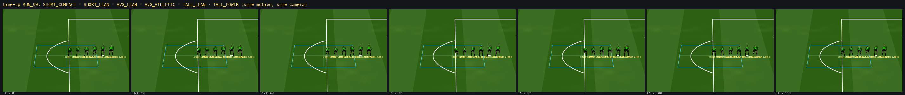
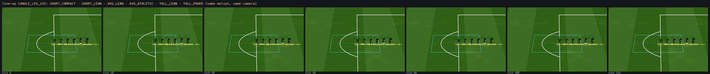
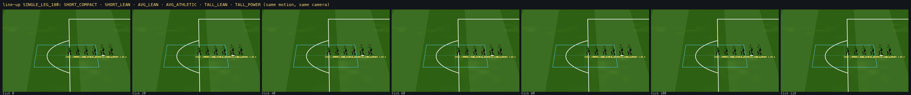
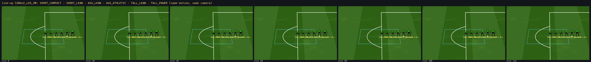
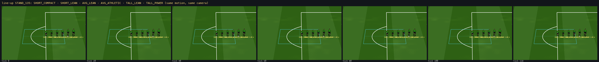
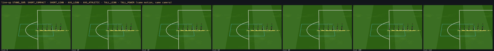
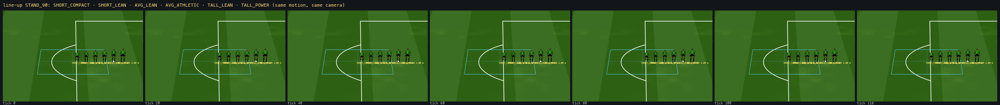
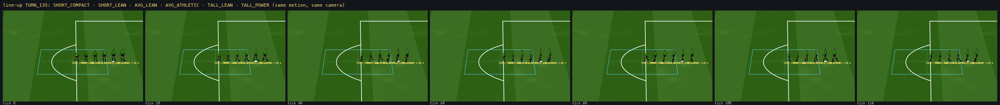
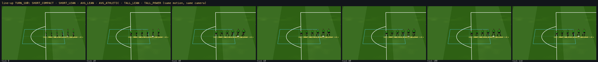
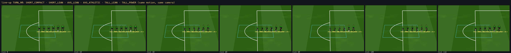
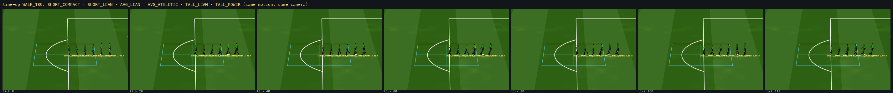
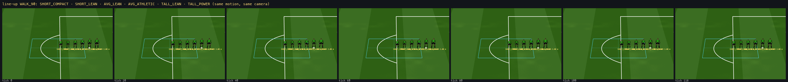
| body | motion | foot slide max [m] | planted sole float max [m] | sole penetration max [m] | plant over-reach max [m] | knee min [deg] | elbow min [deg] | joint jump max / tick [m, root frame] | skin edge stretch max × | morphology drift [m] | measured stride [m] | gait stride / cadence | |
|---|---|---|---|---|---|---|---|---|---|---|---|---|---|
| SHORT_COMPACT | STAND | 0 | 0 | 0.0029 | 0 | 156.2 | 174 | 0 | 1.291 | 0 | — | — | |
| SHORT_COMPACT | READY | 0 | 0 | 0 | 0 | 103.4 | 120 | 0 | 1.789 | 0 | — | — | |
| SHORT_COMPACT | WALK | 0.1193 | 0.1605 | 0.0296 | 0 | 135.4 | 155 | 0.1785 | 1.494 | 0.0001 | 0.929 | 0.464 m / 3.018 steps/s | |
| SHORT_COMPACT | RUN | 0.0578 | 0.0314 | 0.0215 | 0.0582 | 102 | 100 | 0.2802 | 1.777 | 0.0001 | 1.875 | 0.937 m / 6.405 steps/s | |
| SHORT_COMPACT | TURN | 0.1347 | 0.1351 | 0.0323 | 0.0337 | 133.3 | 155 | 0.1811 | 1.523 | 0.0001 | 0.911 | 0.425 m / 2.822 steps/s | |
| SHORT_COMPACT | SINGLE_LEG | 0 | 0 | 0 | 0 | 88 | 140 | 0 | 1.855 | 0 | — | — | |
| SHORT_COMPACT | PUNT | 0 | 0 | 0.0029 | 0 | 156.2 | 174 | 0 | 1.291 | 0 | — | — | |
| SHORT_LEAN | STAND | 0 | 0 | 0.0032 | 0 | 156.3 | 174 | 0 | 1.2 | 0 | — | — | |
| SHORT_LEAN | READY | 0 | 0 | 0 | 0 | 103.5 | 120 | 0 | 1.543 | 0 | — | — | |
| SHORT_LEAN | WALK | 0.1427 | 0.1799 | 0.0344 | 0 | 136.9 | 155 | 0.1501 | 1.342 | 0 | 1.026 | 0.511 m / 2.738 steps/s | |
| SHORT_LEAN | RUN | 0.0724 | 0.0832 | 0.0162 | 0 | 102 | 100 | 0.2787 | 1.537 | 0 | 2.064 | 1.033 m / 5.809 steps/s | |
| SHORT_LEAN | TURN | 0.1568 | 0.1456 | 0.0359 | 0.0281 | 134.7 | 155 | 0.191 | 1.337 | 0 | 0.99 | 0.469 m / 2.56 steps/s | |
| SHORT_LEAN | SINGLE_LEG | 0 | 0 | 0 | 0 | 88 | 140 | 0 | 1.585 | 0 | — | — | |
| SHORT_LEAN | PUNT | 0 | 0 | 0.0032 | 0 | 156.3 | 174 | 0 | 1.2 | 0 | — | — | |
| AVG_LEAN | STAND | 0 | 0 | 0.0033 | 0 | 156.3 | 174 | 0 | 1.219 | 0 | — | — | |
| AVG_LEAN | READY | 0 | 0 | 0 | 0 | 103.5 | 120 | 0 | 1.597 | 0 | — | — | |
| AVG_LEAN | WALK | 0.1496 | 0.182 | 0.0349 | 0 | 136.8 | 155 | 0.1724 | 1.376 | 0.0001 | 1.059 | 0.53 m / 2.642 steps/s | |
| AVG_LEAN | RUN | 0.0721 | 0.0699 | 0.0154 | 0 | 102 | 100 | 0.2824 | 1.591 | 0.0001 | 2.14 | 1.07 m / 5.606 steps/s | |
| AVG_LEAN | TURN | 0.1856 | 0.1411 | 0.0365 | 0.0414 | 133.9 | 155 | 0.2443 | 1.39 | 0.0001 | 1.034 | 0.486 m / 2.47 steps/s | |
| AVG_LEAN | SINGLE_LEG | 0 | 0 | 0 | 0 | 88 | 140 | 0 | 1.645 | 0 | — | — | |
| AVG_LEAN | PUNT | 0 | 0 | 0.0033 | 0 | 156.3 | 174 | 0 | 1.219 | 0 | — | — | |
| AVG_ATHLETIC | STAND | 0 | 0 | 0.0034 | 0 | 156.3 | 174 | 0 | 1.264 | 0 | — | — | |
| AVG_ATHLETIC | READY | 0 | 0 | 0 | 0 | 103.5 | 120 | 0 | 1.712 | 0 | — | — | |
| AVG_ATHLETIC | WALK | 0.1601 | 0.1965 | 0.0362 | 0 | 137.5 | 155 | 0.1551 | 1.448 | 0 | 1.103 | 0.551 m / 2.54 steps/s | |
| AVG_ATHLETIC | RUN | 0.0732 | 0.0525 | 0.0151 | 0 | 102 | 100 | 0.282 | 1.688 | 0 | 1.858 | 1.113 m / 5.391 steps/s | |
| AVG_ATHLETIC | TURN | 0.1813 | 0.1575 | 0.0374 | 0.0362 | 135 | 155 | 0.2358 | 1.443 | 0.0001 | 1.081 | 0.505 m / 2.375 steps/s | |
| AVG_ATHLETIC | SINGLE_LEG | 0 | 0 | 0 | 0 | 88 | 140 | 0 | 1.77 | 0 | — | — | |
| AVG_ATHLETIC | PUNT | 0 | 0 | 0.0034 | 0 | 156.3 | 174 | 0 | 1.264 | 0 | — | — | |
| TALL_LEAN | STAND | 0 | 0 | 0.0038 | 0 | 156.3 | 174 | 0 | 1.194 | 0 | — | — | |
| TALL_LEAN | READY | 0 | 0 | 0 | 0 | 103.6 | 120 | 0 | 1.526 | 0 | — | — | |
| TALL_LEAN | WALK | 0.1905 | 0.2198 | 0.0408 | 0 | 138.3 | 155 | 0.0743 | 1.32 | 0 | 1.22 | 0.612 m / 2.288 steps/s | |
| TALL_LEAN | RUN | 0.0862 | 0.0898 | 0.0152 | 0 | 102 | 100 | 0.2884 | 1.523 | 0 | 2.468 | 1.236 m / 4.855 steps/s | |
| TALL_LEAN | TURN | 0.2208 | 0.1811 | 0.0415 | 0.0387 | 136.2 | 155 | 0.1571 | 1.342 | 0 | 1.2 | 0.561 m / 2.139 steps/s | |
| TALL_LEAN | SINGLE_LEG | 0 | 0 | 0 | 0 | 88 | 140 | 0 | 1.567 | 0 | — | — | |
| TALL_LEAN | PUNT | 0 | 0 | 0.0038 | 0 | 156.3 | 174 | 0 | 1.194 | 0 | — | — | |
| TALL_POWER | STAND | 0 | 0 | 0.0037 | 0 | 156.3 | 174 | 0 | 1.27 | 0 | — | — | |
| TALL_POWER | READY | 0 | 0 | 0 | 0 | 103.6 | 120 | 0 | 1.723 | 0 | — | — | |
| TALL_POWER | WALK | 0.1826 | 0.2177 | 0.0386 | 0 | 137.8 | 155 | 0.0735 | 1.443 | 0 | 1.202 | 0.6 m / 2.334 steps/s | |
| TALL_POWER | RUN | 0.0784 | 0.0347 | 0.0141 | 0 | 102 | 100 | 0.2887 | 1.71 | 0 | 2.181 | 1.211 m / 4.954 steps/s | |
| TALL_POWER | TURN | 0.2324 | 0.1774 | 0.0399 | 0.0497 | 135.3 | 155 | 0.2545 | 1.443 | 0 | 1.189 | 0.55 m / 2.182 steps/s | |
| TALL_POWER | SINGLE_LEG | 0 | 0 | 0 | 0 | 88 | 140 | 0 | 1.783 | 0 | — | — | |
| TALL_POWER | PUNT | 0 | 0 | 0.0037 | 0 | 156.3 | 174 | 0 | 1.27 | 0 | — | — |
STAND / READY / SINGLE_LEG / PUNT hold exactly on every body. RUN: slide ≤ 9 cm, over-reach ≤ 6 cm, penetration ≤ 2 cm. WALK exposes the diagnostic gait's high heel strike (slide / float during the plant blend) — an authoring-quality issue of the throw-away gait, reported not hidden. Skin edge stretch 1.5–1.9× at deep knee bends is the two-ring joint weighting of the diagnostic mesh (§6 of the rig contract). Morphology drift ≤ 0.1 mm: bodies keep their proportions under animation.
| configuration | rAF cadence | frames drawn / seen | cap | page draw mean / p95 [ms] | keeper solve + render mean / p95 [ms] | Mixed composite (2nd character render at 2·RES) [ms] | HUD DOM rebuild [ms] | draws | Mixed | merged | canvas px | JS heap MB |
|---|---|---|---|---|---|---|---|---|---|---|---|---|
| playable Mixed (as shipped) | 30.6 Hz (32.69 ms, p95 33.4) | 612 / 612 | — | 6.15 / 6.9 | 0 / 0 | 0.49 | 0.077 | 2 | True | True | 2400×1900 | 46.5 |
| playable Mixed + ?fps=60 | 30.6 Hz (32.67 ms, p95 33.4) | 612 / 612 | 60 | 6.13 / 6.7 | 0 / 0 | 0.47 | 0.073 | 2 | True | True | 2400×1900 | 49.8 |
| playable, Mixed OFF (page canvas) | 31.7 Hz (31.58 ms, p95 33.4) | 634 / 634 | — | 5.71 / 6.3 | 0 / 0 | 0 | 0.086 | 2 | False | True | 2400×1900 | 71.7 |
| playable Mixed, per-primitive draws (?gkMerged=0) | 30.8 Hz (32.47 ms, p95 33.4) | 616 / 616 | — | 6.13 / 6.8 | 0 / 0 | 0.49 | 0.073 | 30 | True | False | 2400×1900 | 56.1 |
| run | N | s | achieved fps | rAF interval mean / p95 [ms] | mover (stand-in sim) [ms] | animation + IK + skin mats mean / p95 [ms] | render submission mean / p95 [ms] | GPU (timer query) mean / p95 [ms] | page draw (2D env + all) mean / p95 [ms] | draw calls | triangles | vertices (skinned) | bones | skinned meshes | JS heap MB first → last | fps first → last sample |
|---|---|---|---|---|---|---|---|---|---|---|---|---|---|---|---|---|
| pop | 1 | 30 | 32 | 31.3 / 33.4 | 0.004 | 0.119 / 0.2 | 0.087 / 0.2 | 1.593 / 2.166 | 5.053 / 5.5 | 1 | 2,408 | 1,395 | 23 | 1 | 31.7 → 21 (max 47.9) | 32 → 32 |
| pop | 2 | 30 | 31.7 | 31.55 / 33.4 | 0.004 | 0.151 / 0.2 | 0.092 / 0.2 | 1.643 / 2.202 | 5.113 / 5.8 | 2 | 4,816 | 2,790 | 46 | 2 | 29 → 36.4 (max 45.3) | 31.7 → 31.7 |
| pop | 5 | 30 | 31.6 | 31.69 / 33.4 | 0.005 | 0.251 / 0.4 | 0.095 / 0.2 | 1.65 / 2.229 | 5.996 / 7.1 | 5 | 12,040 | 6,975 | 115 | 5 | 22.6 → 43.7 (max 50.3) | 31.7 → 31.6 |
| pop | 11 | 30 | 31.6 | 31.61 / 33.4 | 0.009 | 0.442 / 0.6 | 0.102 / 0.2 | 1.682 / 2.261 | 6.427 / 7 | 11 | 26,488 | 15,345 | 253 | 11 | 21.7 → 52.7 (max 53.4) | 31.6 → 31.6 |
| pop | 22 | 30 | 31.6 | 31.64 / 33.4 | 0.013 | 0.777 / 1 | 0.115 / 0.2 | 1.709 / 2.282 | 6.502 / 7.4 | 22 | 52,976 | 30,690 | 506 | 22 | 22.5 → 30.4 (max 51.2) | 31.7 → 31.6 |
| sustained | 22 | 120 | 31.6 | 31.64 / 33.4 | 0.012 | 0.762 / 1 | 0.116 / 0.2 | 1.726 / 2.281 | 6.447 / 7.1 | 22 | 52,976 | 30,690 | 506 | 22 | 31.1 → 44.3 (max 61.3) | 31.7 → 31.6 |
| run | N | s | achieved fps | rAF interval mean / p95 [ms] | mover (stand-in sim) [ms] | animation + IK + skin mats mean / p95 [ms] | render submission mean / p95 [ms] | GPU (timer query) mean / p95 [ms] | page draw (2D env + all) mean / p95 [ms] | draw calls | triangles | vertices (skinned) | bones | skinned meshes | JS heap MB first → last | fps first → last sample |
|---|---|---|---|---|---|---|---|---|---|---|---|---|---|---|---|---|
| pop | 22 | 30 | 31.2 | 32.14 / 33.4 | 0.014 | 0.769 / 1 | 0.118 / 0.2 | 1.749 / 2.318 | 6.378 / 7 | 22 | 52,976 | 30,690 | 506 | 22 | 20.2 → 49.6 (max 53.6) | 31.2 → 31.2 |
| run | N | s | achieved fps | rAF interval mean / p95 [ms] | mover (stand-in sim) [ms] | animation + IK + skin mats mean / p95 [ms] | render submission mean / p95 [ms] | GPU (timer query) mean / p95 [ms] | page draw (2D env + all) mean / p95 [ms] | draw calls | triangles | vertices (skinned) | bones | skinned meshes | JS heap MB first → last | fps first → last sample |
|---|---|---|---|---|---|---|---|---|---|---|---|---|---|---|---|---|
| pop | 1 | 30 | 31.6 | 31.72 / 33.4 | 0.002 | 0.126 / 0.2 | 0.097 / 0.2 | 2.104 / 2.735 | 5.142 / 5.9 | 1 | 102,168 | 306,504 | 23 | 1 | 54.1 → 59.8 (max 59.8) | 31.6 → 31.6 |
| pop | 2 | 30 | 30.9 | 32.33 / 33.4 | 0.001 | 0.091 / 0.2 | 0.164 / 0.3 | 2.514 / 3.198 | 4.549 / 5.1 | 2 | 204,336 | 613,008 | 46 | 2 | 50.7 → 54.7 (max 66.3) | 30.9 → 30.9 |
| pop | 5 | 30 | 28.6 | 35.03 / 50 | 0.003 | 0.146 / 0.2 | 0.2 / 0.3 | 3.644 / 4.4 | 4.677 / 4.9 | 5 | 510,840 | 1,532,520 | 115 | 5 | 56.5 → 43.1 (max 56.5) | 28.7 → 28.6 |
| pop | 11 | 30 | 24.9 | 40.22 / 50.1 | 0.004 | 0.295 / 0.4 | 0.263 / 0.3 | 5.879 / 6.619 | 4.896 / 5.3 | 11 | 1,123,848 | 3,371,544 | 253 | 11 | 48.2 → 66.9 (max 66.9) | 24.9 → 24.9 |
| pop | 22 | 30 | 19.9 | 50.22 / 50.1 | 0.009 | 0.519 / 0.8 | 0.385 / 0.5 | 10.051 / 10.938 | 5.242 / 5.7 | 22 | 2,247,696 | 6,743,088 | 506 | 22 | 59.7 → 50.4 (max 67.8) | 19.9 → 19.9 |
| sustained | 11 | 90 | 24.8 | 40.39 / 50.1 | 0.003 | 0.282 / 0.4 | 0.257 / 0.3 | 5.876 / 6.673 | 4.843 / 5.3 | 11 | 1,123,848 | 3,371,544 | 253 | 11 | 55.6 → 58.6 (max 69.5) | 24.9 → 24.8 |
| run | N | s | achieved fps | rAF interval mean / p95 [ms] | mover (stand-in sim) [ms] | animation + IK + skin mats mean / p95 [ms] | render submission mean / p95 [ms] | GPU (timer query) mean / p95 [ms] | page draw (2D env + all) mean / p95 [ms] | draw calls | triangles | vertices (skinned) | bones | skinned meshes | JS heap MB first → last | fps first → last sample |
|---|---|---|---|---|---|---|---|---|---|---|---|---|---|---|---|---|
| pop | 1 | 30 | 31.6 | 31.55 / 50 | 0.003 | 0.121 / 0.2 | 25.135 / 45.4 | 6.099 / 11.874 | 30.279 / 50.1 | 1 | 102,168 | 306,504 | 23 | 1 | 120.1 → 60.1 (max 120.1) | 31.5 → 31.6 |
| pop | 2 | 30 | 30 | 33.3 / 33.4 | 0.002 | 0.087 / 0.2 | 28.126 / 29.1 | 7.854 / 13.897 | 32.649 / 35 | 2 | 204,336 | 613,008 | 46 | 2 | 127.5 → 41.5 (max 127.5) | 30 → 30 |
| pop | 5 | 30 | 26.9 | 37.28 / 50.1 | 0.002 | 0.152 / 0.3 | 31.996 / 33.1 | 10.667 / 16.88 | 36.639 / 37.6 | 5 | 510,840 | 1,532,520 | 115 | 5 | 121.6 → 36.6 (max 121.6) | 26.9 → 26.9 |
| pop | 11 | 30 | 21.9 | 45.75 / 50.1 | 0.004 | 0.341 / 0.7 | 39.26 / 40.9 | 15.55 / 21.97 | 45.512 / 47.9 | 11 | 1,123,848 | 3,371,544 | 253 | 11 | 124.4 → 56.2 (max 124.4) | 22.3 → 21.9 |
| pop | 22 | 30 | 16.3 | 61.36 / 66.7 | 0.01 | 0.671 / 1.1 | 54.341 / 55.9 | 24.873 / 31.046 | 60.728 / 62.2 | 22 | 2,247,696 | 6,743,088 | 506 | 22 | 143.3 → 48.1 (max 143.3) | 16.3 → 16.3 |
| sustained | 11 | 90 | 21.8 | 45.58 / 50.1 | 0.003 | 0.344 / 0.6 | 39.304 / 40.8 | 15.922 / 22.35 | 44.947 / 46.2 | 11 | 1,123,848 | 3,371,544 | 253 | 11 | 122.6 → 46.3 (max 122.6) | 21.6 → 21.8 |
Courtois clones — per-primitive draws and per-frame reallocation (the path as shipped in the playable test): not run
| material | triangles | vertices | share | class |
|---|---|---|---|---|
| refined_skin_48 (face, vertex colours) | 35,184 | 105,552 | 34 % | refined vertex colour |
| refined_hair_59 (+57, 58) | 27,968 | 83,904 | 27 % | refined vertex colour |
| 9 eye / iris prims | 11,328 | 33,984 | 11 % | refined eye |
| skin (body) | 7,104 | 21,312 | 7 % | body skin blend |
| shortsBase / shorts / clothDark / clothStitch / madridNavy | 9,152 | 27,456 | 9 % | default / textured |
| glove / latexPanel / cuff / padLight / gearRubber | 5,968 | 17,904 | 6 % | glove latex / gear rubber |
| jersey / sock / boot / sole / trim (atlas) | 5,432 | 16,296 | 5 % | textured (512² atlas, 27 KB) |
| ink (emissive lines) | 800 | 2,400 | 1 % | ink |
| total | 102,168 | 306,504 | 72 B / vertex → 22.1 MB GPU attributes |
Why 30 draws: one draw per material primitive (29) + the ball. All 29 use ONE program with two per-primitive uniforms (class, base colour); a merged path (per-vertex material index + uniform arrays, same fragment math) now renders the character in 1 draw (+1 ball) — verified pixel-identical on 9 frames of fixtures 64 / 42 / 67 (?gkMerged=0 restores the per-primitive path). What remains per character: its own FBO clear, the skinned pass at ROI × density × 2 (ssaa), the resolve quad, the present quad and the 2D composite — the vertex count (61 % face + hair) is the dominant GPU cost, not the draw count.
| component | bytes | shared / per player |
|---|---|---|
| Courtois GLB (geometry 22.10 MB: positions 12 + normals 12 + uv 8 + joints 8 + weights 16 + colour 16 B per vertex × 306,504; atlas PNG 27 KB; JSON 39 KB) | 22,135,988 | per player (as delivered) |
| Courtois rig + contact calibration JSON | 15,150 | per player (morphology + calibration) |
| runtime code (m4, skeleton, skin builder, IK, renderer, character program, GK graph / backends, outfield rig / motion / scene, playtest) | 365,121 | shared |
| animation data today (GK motion library + V6 clip, rotation-only keys) | 60,981 | shared (retargets to any morphology) |
| shared skeleton definition (SKEL_DEF + morphology defaults) | < 4,000 | shared |
| generic body morphology record | ≈ 600 each | per player |
| players | naive: one Courtois-class GLB each | shared-topology architecture: shared runtime + animation + a few body-mesh families (≈1.5 MB each, 2 assumed) + per-player morphology / appearance config (≈15 KB) + ≈40 kit atlases + ≈80 KB unique geometry per player (face / hair deltas) | of which per-player config |
|---|---|---|---|
| 1 | 22 MB | 3.5 MB | 0.02 MB |
| 20 | 443 MB | 5.9 MB | 0.30 MB |
| 100 | 2,214 MB | 14.0 MB | 1.51 MB |
| 500 | 11,068 MB | 52.1 MB | 7.58 MB |
| 1000 | 22,136 MB | 99.7 MB | 15.15 MB |
The only linear term worth worrying about is per-player geometry: a Courtois-class GLB per player is 22 MB × N (22 GB at 1,000). Everything else (code, skeleton, animation, shaders, material machinery, kit atlases) is shared. The face + hair vertex-colour meshes are 61 % of Courtois's vertices; a production face/hair pipeline must be a shared-topology mesh family with per-player deltas (or far lower density at the touchline camera, where the whole keeper is ~60 base px tall).